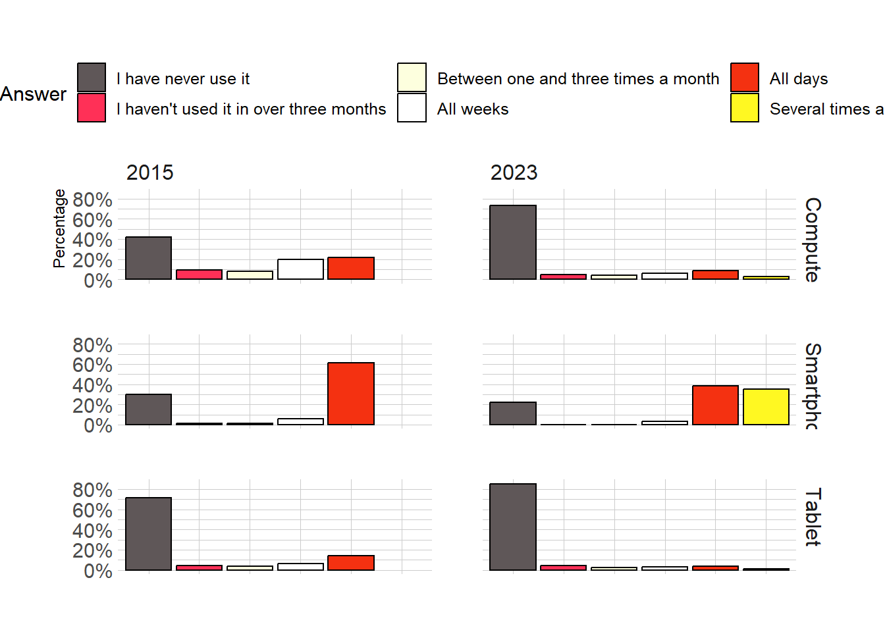
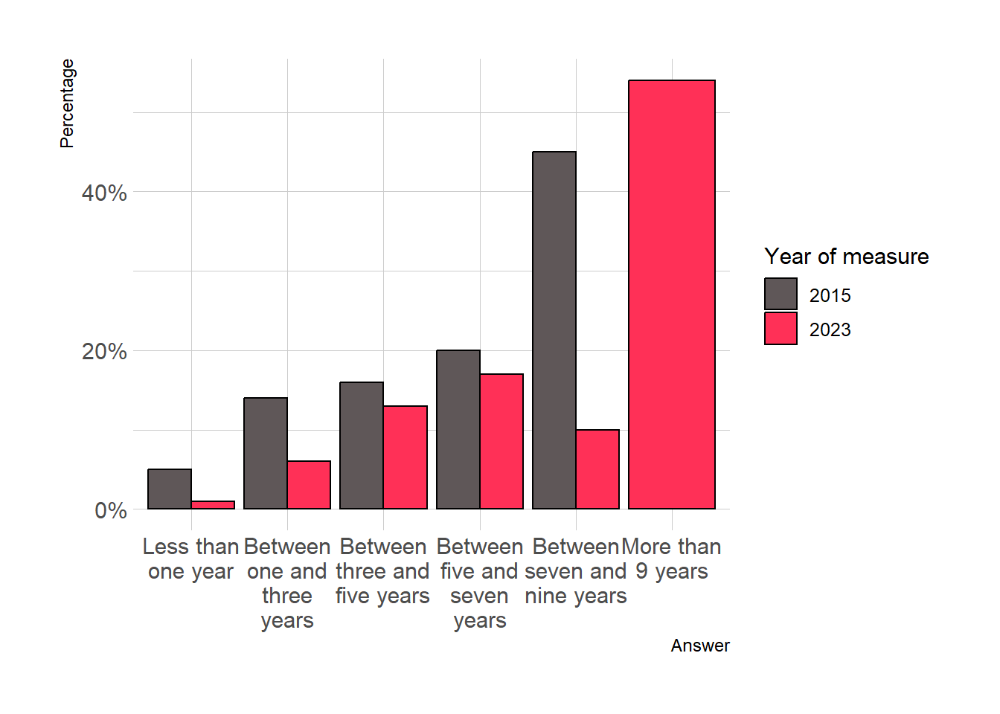
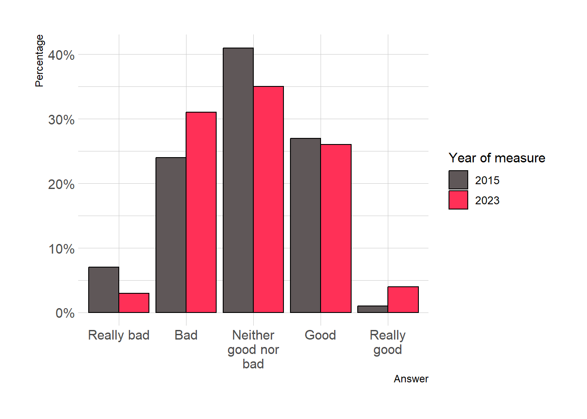
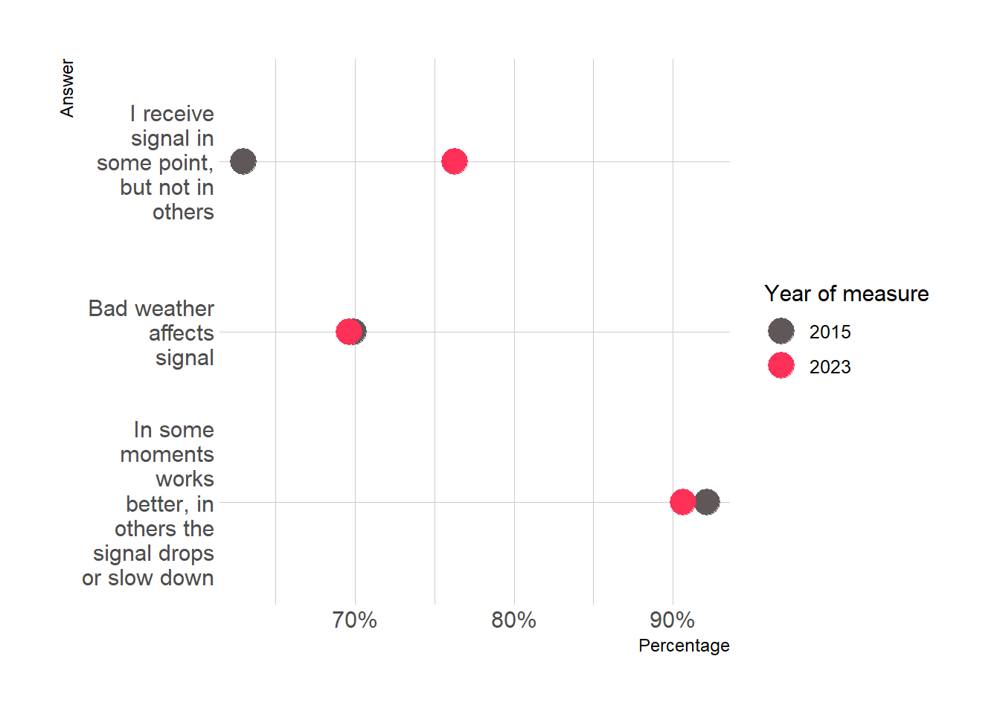

The next document have a little presentation about the tendencies of digital inclusion on rural areas in Chile. For that, it was analyzed the 2015 survey of digital conectivity from the Diego Portales University and the 2023 survey of digital inclusion made by NUDOS, specifically by Teresa Correa, with support of the rest of the team.
Both surveys share some questions and variables, because the 2023 questionnaire extracted a great part of the items measured on 2015. The items shared by both studies are the next one:
The Figure 1 shows that the majority of the participants has adopted smartphones in rural areas, in deterioration of basic cellphones. The acquisition of other devices do not present major variations. Nearly the 80% of the people interviewed have a smartphone in 2023. In addition to the above, results interesting that in 2015 the percentage of participants with PC is more than in 2023, but it’s explains probably because of the migration of users from notebooks, that increased with the passage of time.
Figure 1: ¿Cuáles de los siguientes dispositivos electrónicos usan los miembros de este hogar?
Home adoption of internet (b2)
The Figure 2 indicates the adoptions of internet in the house tends to grow up considerably across the time in rural areas of the country. The plot shows that the proportion of homes with connection rise more than a 30%
Figure 2: ¿Podría decirme si en este hogar tienen o no conexión a internet?: Ya sea mediante una conexión fija o a través de un teléfono móvil
Home system connection (b4)
Data illustrated in Figure 3 suggest, in contradiction of intuitive thinking, the fixed bandwith mantains the proportion of user. Instead, rise slightly the satelital connection and mobile broadband. Results strange the “other” option rise up more than a 60%, what probably should be a measure error of the question.
Figure 3: ¿Mediante cuál de los siguientes sistemas se conectan a internet en el hogar?
Frequent use of electronic devices (b5)
Figure 4 display the frequency of use of electronic devices. It’s important to say the 2023 measure add a new category to the question (“Several times a day”). Data shows the tendencies do not have changed importantly during time. Inclusive, it’s striking the decrease of computer use, but no increase use of other devices.
Code
b5_2015 <- data_2015 %>%select(p009_01,p009_03,p009_04) %>%group_by(p009_01) %>%mutate(b5_1=sum(p009_01,na.rm=T)) %>%ungroup() %>%group_by(p009_03) %>%mutate(b5_2=sum(p009_03,na.rm=T)) %>%ungroup() %>%group_by(p009_04) %>%mutate(b5_3=sum(p009_04,na.rm=T)) %>%ungroup()b5_2015 <-cbind( b5_2015 %>%group_by(p009_01) %>%summarise(b5_1=mean(b5_1,na.rm=T)), b5_2015 %>%group_by(p009_03) %>%summarise(b5_2=mean(b5_2,na.rm=T)), b5_2015 %>%group_by(p009_04) %>%summarise(b5_3=mean(b5_3,na.rm=T)))%>%rename(Computador=p009_01,Smartphone=p009_03,Tablet=p009_04) %>%slice(-6) %>%mutate(year=2015)b5_2023 <-rename(data_2023,Computador=b5_1,Smartphone=b5_2,Tablet=b5_3)b5_2023 <-cbind( b5_2023 %>%count(Computador) %>%drop_na() %>%rename(b5_1=n), b5_2023 %>%count(Smartphone) %>%drop_na() %>%rename(b5_2=n), b5_2023 %>%count(Tablet) %>%drop_na() %>%rename(b5_3=n)) %>%mutate(year=2023)var_label(b5_2015) <-NULLvar_label(b5_2023) <-NULLb5_2015 <-mutate_all(b5_2015,as.numeric)b5_2023 <-mutate_all(b5_2023,as.numeric)b5 <-rbind(b5_2015,b5_2023)b5 <-rbind( b5 %>%select(year,response=Computador,n=b5_1) %>%mutate(dispositivo="Computer"), b5 %>%select(year,response=Smartphone,n=b5_2) %>%mutate(dispositivo="Smartphone"), b5 %>%select(year,response=Tablet,n=b5_3) %>%mutate(dispositivo="Tablet"))b5 <- b5 %>%group_by(year,dispositivo) %>%mutate(prop=n*100/sum(n),response=as_factor(response),response=dplyr::recode(response,"1"="I have never use it","2"="I haven't used it in over three months","3"="Between one and three times a month","4"="All weeks","5"="All days","6"="Several times a day"))ggplot(b5,aes(x=response,y=prop, fill=response))+geom_bar(stat ="identity",color="black")+facet_grid(dispositivo~year)+theme_ipsum()+labs(y="Percentage",fill="Answer")+theme(axis.title.x=element_blank(),axis.text.x=element_blank(),axis.ticks.x=element_blank(),legend.position ="top")+scale_y_continuous(labels = scales::percent_format(scale =1))+scale_fill_manual(values =c("#5f5758","#ff3057","#fdffde","#ffffff","#f43111","#fff822"))

Figure 4: ¿Con qué frecuencia utiliza usted los siguientes aparatos o sistemas electrónicos?
User of internet (b6)
The user of internet have increased consistently. The Figure 5 shows a rise of more than 30% about the total participants that use internet personally.
Figure 5: Independientemente del acceso en el hogar ¿Usted ha usado internet alguna vez?
First internet access (b7)
The question of Figure 6 was calculated only with participants who declared being users of internet in the preview question (See Figure 5). Data is emphatic. In 2023 the majority of surveyed are user of internet from more than 9 years. This is contradictory with 2015 results, where the distribution of network access is more homogeneus.
Code
b7_2015 <- data_2015 %>%filter(p018==1) %>%select(p020)%>%rename(b7=p020) %>%group_by(b7) %>%summarise(prop=sum(b7,na.rm=T))%>%ungroup()%>%mutate(prop=prop/sum(prop,na.rm=T),prop=round(prop,2),year=2015)%>%drop_na()%>%mutate_all(as.numeric)b7_2023 <- data_2023 %>%filter(b6==1) %>%select(b7)%>%group_by(b7) %>%summarise(prop=sum(b7,na.rm=T))%>%ungroup()%>%mutate(prop=prop/sum(prop,na.rm=T),prop=round(prop,2),year=2023)%>%drop_na()%>%mutate_all(as.numeric)b7 <-rbind(b7_2015,b7_2023) %>%mutate(response=recode(b7,"1"="Less than one year","2"="Between one and three years","3"="Between three and five years","4"="Between five and seven years","5"="Between seven and nine years","6"="More than 9 years"),year=as.factor(year),response=as_factor(response),response=factor(response,levels=c("Less than one year","Between one and three years","Between three and five years","Between five and seven years","Between seven and nine years","More than 9 years" )))ggplot(b7,aes(x=response,y=prop,fill=year))+geom_bar(position ="dodge",stat ="identity",color="black")+scale_y_continuous(labels = scales::percent)+theme_ipsum()+labs(x="Answer",y="Percentage",fill="Year of measure")+scale_x_discrete(labels =function(x) str_wrap(x, width =10))+scale_fill_manual(values = nudos_color_binary)

Figure 6: ¿Hace cuánto tiempo fue la primera vez que accedió a internet?
Speed of internet service (b9)
Results in Figure 7 were also calculated only with users of internet sample. There is a little increase of users who self-report a very fast connection during 2023.
Figure 7: ¿Cómo calificaría la velocidad del servicio de internet para la forma de acceso que usa frecuentemente?
Signal connection quality (b10)
Figure 8 was also calculated by the same method of the preview two plots. Results shows 2015 participants tends to concentrate in intermedial values, but in the last measure, tends to go to extreme values. Anyway, it is mantained the concentration of answers in low signal quality.
Code
b10_2015 <- data_2015 %>%filter(p018==1) %>%select(p023)%>%rename(b10=p023) %>%group_by(b10) %>%summarise(prop=sum(b10,na.rm=T))%>%ungroup()%>%mutate(prop=prop/sum(prop,na.rm=T),prop=round(prop,2),year=2015)%>%drop_na()%>%mutate_all(as.numeric)b10_2023 <- data_2023 %>%filter(b6==1) %>%select(b10)%>%group_by(b10) %>%summarise(prop=sum(b10,na.rm=T))%>%ungroup()%>%mutate(prop=prop/sum(prop,na.rm=T),prop=round(prop,2),year=2023)%>%drop_na()%>%mutate_all(as.numeric)b10 <-rbind(b10_2015,b10_2023) %>%mutate(response=recode(b10,"1"="Really good","2"="Good","3"="Neither good nor bad","4"="Bad","5"="Really bad"),response=factor(response,levels =c("Really bad","Bad","Neither good nor bad","Good","Really good")),year=as_factor(year) )ggplot(b10,aes(x=response,y=prop,fill=year))+geom_bar(position ="dodge",stat ="identity",color="black")+scale_y_continuous(labels = scales::percent)+theme_ipsum()+labs(x="Answer",y="Percentage",fill="Year of measure")+scale_x_discrete(labels =function(x) str_wrap(x, width =10))+scale_fill_manual(values = nudos_color_binary)

Figure 8: ¿Cómo calificaría la calidad de la señal para la forma de acceso que usted usa con mayor frecuencia?
Causes internet signal problems (b11)
Percentages of Figure 9 were calculated only for whom reported bad or neither bad signal quality. Results suggests majority of participants identify three alternatives like principals causes of bad conectivity. In 2023 increase participants saying singal level down by the place where is the user.
Code
b11_2015 <- data_2015 %>%filter(p023%in%c(3,4,5)) %>%select(p024_01,p024_02,p024_03)b11_2015[b11_2015==2] <-0b11_2015 <-round(b11_2015 %>%colSums(na.rm=T) *100/216,2)b11_2023 <- data_2023 %>%filter(b10%in%c(1,2,3)) %>%select(b11_1,b11_2,b11_3)b11_2023[b11_2023==2] <-0b11_2023 <-round(b11_2023 %>%colSums(na.rm=T) *100/257,2)b11 <-rbind(b11_2015,b11_2023)rownames(b11) <-NULLb11 <-as.data.frame(b11) %>%mutate(year=c(2015,2023)) %>%rename(b11_1=p024_01,b11_2=p024_02,b11_3=p024_03)b11 <- b11 %>%pivot_longer(cols =starts_with("b11"),names_to ="variables",values_to ="prop") %>%mutate(year=as.factor(year),variables=set_labels(variables, labels =c ("In some moments works better, in others the signal drops or slow down"="b11_1","Bad weather affects signal"="b11_2","I receive signal in some point, but not in others"="b11_3")))ggplot(b11,aes(x=prop,y=to_label(variables),color=year))+geom_point(size=6)+theme_ipsum()+scale_x_continuous(labels = scales::percent_format(scale =1))+labs(x="Percentage",y="Answer",color="Year of measure")+scale_y_discrete(labels =function(x) str_wrap(x, width =12))+scale_color_manual(values = nudos_color_binary)

Figure 9: De acuerdo a su experiencia ¿Por qué no funciona bien la señal de internet?
C Module: Digital Habilities
Insecurity in use of technologies (c1)
Code
usage_2015 <- data_2015 %>%select(p034_02,p034_03,p034_04,p034_05,p034_06,p034_07,p034_08, p034_10,p035_01,p035_02, #Recodificar e2_3_2, e2_3_3 y e2_3_4, p035_03,p035_04,p035_05,p035_06,p035_07,p035_08)var_label(usage_2015) <-var_label(usage_2015) %>%substring(76)sjmisc::descr(usage_2015,show =c("label","range", "mean", "sd", "n"))%>%mutate(var=recode(var,"p034_02"="Adquirir información","p034_03"="Adquirir información","p034_04"="Adquirir información","p034_05"="Adquirir información","p034_06"="Comunicación","p034_07"="Comunicación","p034_08"="Comunicación","p034_10"="Comunicación","p035_01"="Recreación","p035_02"="Recreación","p035_03"="Comercio electrónico y emprendimiento","p035_04"="Comercio electrónico y emprendimiento","p035_05"="Comercio electrónico y emprendimiento","p035_06"="Comercio electrónico y emprendimiento","p035_07"="Comercio electrónico y emprendimiento","p035_08"="Comercio electrónico y emprendimiento" ),mean=round(mean,2),sd=round(sd,2))%>%gt(groupname_col ="var",rowname_col ="label")